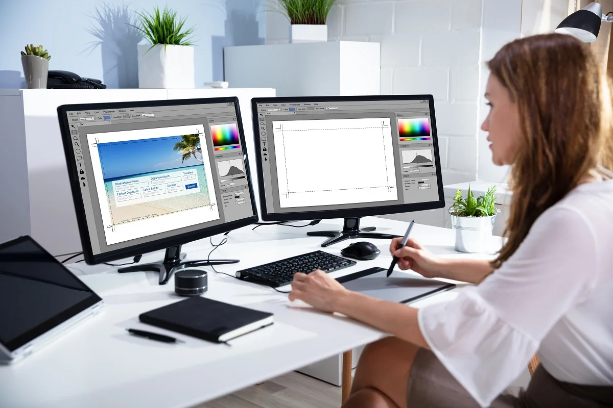

CO TO JEST GRAFIKA KOMPUTEROWA
Grafika komputerowa to dziedzina informatyki zajmująca się tworzeniem, modyfikowaniem i wyświetlaniem obrazów za pomocą komputerów, zarówno statycznych (np. zdjęcia), jak i dynamicznych (np. animacje). Może obejmować obrazy 2D i 3D. Znajduje zastosowanie w grach, filmach, projektowaniu, medycynie, reklamie i sztuce.
Jej celem jest ułatwienie wizualizacji informacji i tworzenie realistycznych
lub abstrakcyjnych obrazów, które wspierają komunikację i zrozumienie, odgrywając
kluczową rolę w tworzeniu treści cyfrowych dla różnych mediów.
